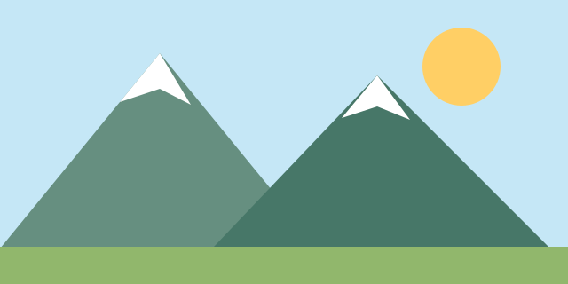

En esta actividad vamos a organizar un fin de semana con planes culturales, deportivos y de descanso
Mi plan favorito empieza el sábado por la mañana:
y continua el domingo con
nuevas actividaes.

| Hora | Lunes | Martes | Miércoles | Jueves | Viernes |
| 16:00 - 17:00 | Lectura | Música | Paseo | Dibujo | Cine |
| 17:00 - 18:00 | Deporte | Juegos | Baile | Lectura | Cine |
| 18:00 - 18:15 | Descanso | ||||
| 18:15 - 19:00 | Taller creativo | ||||
| 19:00 - 19:45 | Taller creativo | ||||
| 19:45 - 20:30 | Taller creativo |
El tiempo libre también sirve para aprender, descansar y compartir. Mi actividad preferida es pasear al aire libre